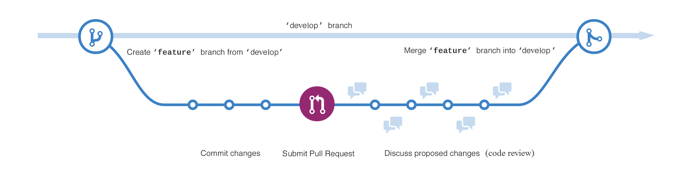

Gitflow metodika¶
Forkovanie na GitHub-e¶
Fork na GitHub-e neprenesie tag-y do forknuteho repozitara, treba ich rucne preniest, v novom repozitari:
- git remote add povodny-repozitar git@github.com:povodny-repozitar/nazov_repo.git
- git fetch povodny-repozitar ‘refs/tags/:refs/tags/’
- git push –tags
Vetvy¶
Master - hlavny projekt
- Develop - branchnuta z mastra, kazdy sprint ma vlastnu Develop vetvu, na konci sprintu sa mergne spat do mastra,
!!! pred mergom treba spravit komplet build (nie len unity)
Feature - branchnuta z developu, kazdy novy kus funkcionality (task v issue tracking nastroji), ktory sa kodi musi mat vlastnu
- Feature vetvu… po dokonceni a validaci kodu sa mergne spat do Developu, NEINTERAGUJE S MASTER VETVOU
Hotfix - vetva na rychly fix priamo z mastera, merguje sa do mastera AJ developu, navysuje aktualnu verziu
Vzdy mergujeme cez Shell a s prepinacom –no-ff
Cheat sheet so vsetkymi zakladnymi commandmi: https://training.github.com/kit/downloads/github-git-cheat-sheet.pdf
Pull requesty¶
Po dokonceni prace, ked sme ready to review sa dava pull request na vetvu, do ktorej sa bude mergovat.
Pull request sa robi z GUI GitHubu (pravy horny roh), alebo $ git request-pull {meno_commitu} {URL} (doporucujem robit cez GUI)
Po odsuhlaseni Pull requestu sa potom pristupi k mergu.

Obrazok ilustruje vytvorenie feature branch z develop vetvy, implementaciu rozdelenu do znazornenych commitov, nasledny pull request predstavujuci ziadost o code review a finalny merge do develop vetvy daneho sprintu.
Commit messages¶
v Commit messages pouzivame tagy a ID ulohy na zaciatok:
- [FIX] - fixli sme nejaku chybu z minula, bugfix, hotfix a podobne
- [ADD] - pridali sme novu funkcionalitu, subor, …
- [DOC] - pridali sme dokumentaciu, komenty…
- [REF] - pre refactoring
- [FMT] - formatovanie textu, uprava
- [TEST] - pre testy
- [BUILD] - aktualizacia CMake build systemu, modulov
Za tym velmi strucne (a vystizne) opiseme, ake zmeny sme spravili. Message by mali byt kratke, no pokryvat vsetko, co sme v commite spravili. !!! vseobecny tvar: “[tag] #taskId Popis vykonanej zmeny” Napr. [DOC] #3654 Pridanie uvadzania ID ulohy do gitflow metodiky
Useful commands¶
- $ git submodule update –init –recursive
- update submodulov (dependencies)
- $ git checkout -f meno_branch
- checkout branche aj napriek lokalnym zmenam, budu zahodene
- $ git status
- vypise vsetky vykonane zmeny
- $ git stash / $ git stash pop
- ulozi stav projektu do stashu, z ktoreho sa da potom tento stav pop-nut, dobre na prenos zmien medzi vetvami
Tvorba feature branch-u:¶
- $ git checkout -b “feature/meno-feature” develop //Switched to a new branch “feature/meno-feature”
Mergovanie hotoveho feature:¶
- $ git checkout develop //Switched to branch ‘develop’
- $ git merge –no-ff meno-feature
- $ git push origin develop
Tvorba hotfix branch-u:¶
- $ git checkout -b “hotfix/nazov-co-fixujem” master //Switched to a new branch “hotfix-{cislo_verzie}”
- $ git commit -m “sprava, co som spravil”
Uzatvorenie Hotfix branchu:¶
- $ git checkout develop //Switched to branch ‘develop’
- $ git merge –no-ff “hotfix/nazov-co-fixujem”